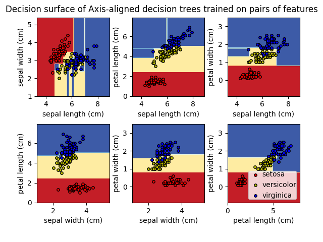
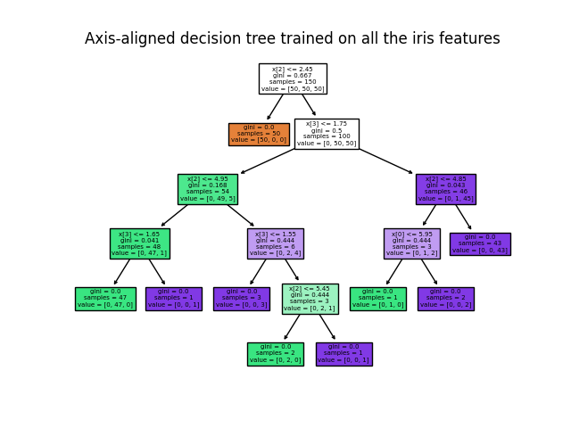
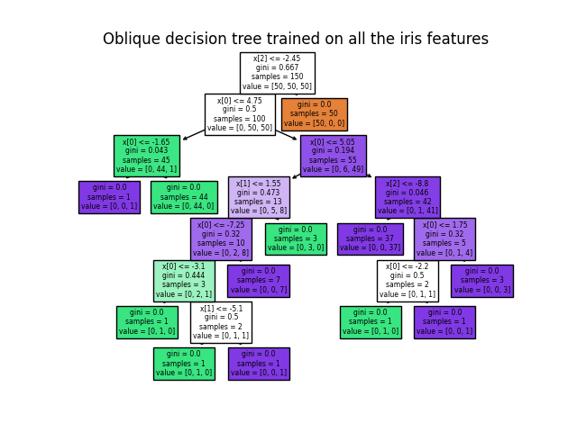

Note
Go to the end to download the full example code.
Plot the decision surface of decision trees trained on the iris dataset#
Plot the decision surface of a decision tree and oblique decision tree trained on pairs of features of the iris dataset.
See decision tree for more information on the estimators.
For each pair of iris features, the decision tree learns axis-aligned decision boundaries made of combinations of simple thresholding rules inferred from the training samples. The oblique decision tree learns oblique decision boundaries made from linear combinations of the features in the training samples and then the same thresholding rule as regular decision trees.
We also show the tree structure of a model built on all of the features.
import matplotlib.pyplot as plt
import numpy as np
from sklearn.datasets import load_iris
from sklearn.inspection import DecisionBoundaryDisplay
from sktree._lib.sklearn.tree import DecisionTreeClassifier, plot_tree
from sktree.tree import ObliqueDecisionTreeClassifier
First load the copy of the Iris dataset shipped with scikit-learn:
iris = load_iris()
# Parameters
n_classes = 3
plot_colors = "ryb"
plot_step = 0.02
clf_labels = ["Axis-aligned", "Oblique"]
random_state = 123456
clfs = [
DecisionTreeClassifier(random_state=random_state),
ObliqueDecisionTreeClassifier(random_state=random_state),
]
for clf, clf_label in zip(clfs, clf_labels):
fig, axes = plt.subplots(2, 3)
axes = axes.flatten()
for pairidx, pair in enumerate([[0, 1], [0, 2], [0, 3], [1, 2], [1, 3], [2, 3]]):
# We only take the two corresponding features
X = iris.data[:, pair]
y = iris.target
# Train
clf.fit(X, y)
# Plot the decision boundary
ax = axes[pairidx]
plt.tight_layout(h_pad=0.5, w_pad=0.5, pad=2.5)
DecisionBoundaryDisplay.from_estimator(
clf,
X,
cmap=plt.cm.RdYlBu,
response_method="predict",
ax=ax,
xlabel=iris.feature_names[pair[0]],
ylabel=iris.feature_names[pair[1]],
)
# Plot the training points
for i, color in zip(range(n_classes), plot_colors):
idx = np.where(y == i)
ax.scatter(
X[idx, 0],
X[idx, 1],
c=color,
label=iris.target_names[i],
cmap=plt.cm.RdYlBu,
edgecolor="black",
s=15,
)
fig.suptitle(f"Decision surface of {clf_label} decision trees trained on pairs of features")
plt.legend(loc="lower right", borderpad=0, handletextpad=0)
_ = plt.axis("tight")
plt.show()
- 

/home/circleci/project/examples/sklearn_vs_sktree/plot_iris_dtc.py:73: UserWarning: No data for colormapping provided via 'c'. Parameters 'cmap' will be ignored
ax.scatter(
/home/circleci/project/examples/sklearn_vs_sktree/plot_iris_dtc.py:73: UserWarning: No data for colormapping provided via 'c'. Parameters 'cmap' will be ignored
ax.scatter(
/home/circleci/project/examples/sklearn_vs_sktree/plot_iris_dtc.py:73: UserWarning: No data for colormapping provided via 'c'. Parameters 'cmap' will be ignored
ax.scatter(
/home/circleci/project/examples/sklearn_vs_sktree/plot_iris_dtc.py:73: UserWarning: No data for colormapping provided via 'c'. Parameters 'cmap' will be ignored
ax.scatter(
/home/circleci/project/examples/sklearn_vs_sktree/plot_iris_dtc.py:73: UserWarning: No data for colormapping provided via 'c'. Parameters 'cmap' will be ignored
ax.scatter(
/home/circleci/project/examples/sklearn_vs_sktree/plot_iris_dtc.py:73: UserWarning: No data for colormapping provided via 'c'. Parameters 'cmap' will be ignored
ax.scatter(
/home/circleci/project/examples/sklearn_vs_sktree/plot_iris_dtc.py:73: UserWarning: No data for colormapping provided via 'c'. Parameters 'cmap' will be ignored
ax.scatter(
/home/circleci/project/examples/sklearn_vs_sktree/plot_iris_dtc.py:73: UserWarning: No data for colormapping provided via 'c'. Parameters 'cmap' will be ignored
ax.scatter(
/home/circleci/project/examples/sklearn_vs_sktree/plot_iris_dtc.py:73: UserWarning: No data for colormapping provided via 'c'. Parameters 'cmap' will be ignored
ax.scatter(
/home/circleci/project/examples/sklearn_vs_sktree/plot_iris_dtc.py:73: UserWarning: No data for colormapping provided via 'c'. Parameters 'cmap' will be ignored
ax.scatter(
/home/circleci/project/examples/sklearn_vs_sktree/plot_iris_dtc.py:73: UserWarning: No data for colormapping provided via 'c'. Parameters 'cmap' will be ignored
ax.scatter(
/home/circleci/project/examples/sklearn_vs_sktree/plot_iris_dtc.py:73: UserWarning: No data for colormapping provided via 'c'. Parameters 'cmap' will be ignored
ax.scatter(
Display the structure of a single decision tree trained on all the features together.
for clf, clf_label in zip(clfs, clf_labels):
plt.figure()
clf.fit(iris.data, iris.target)
plot_tree(clf, filled=True)
plt.title(f"{clf_label} decision tree trained on all the iris features")
plt.show()
- 
- 
Total running time of the script: (0 minutes 4.503 seconds)
Estimated memory usage: 9 MB